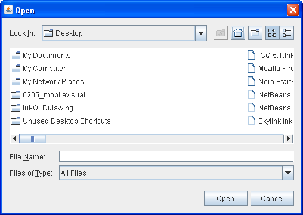

Lección: Usando Componentes Swing
Sección: Cómo Usar Varios Componentes
Cómo Usar Selectores de Fichero
Los selectores de fichero ofrecen una IGU para navegar el sistema de ficheros, y entonces elegir un directorio
o un fichero de una lista, o introducir el nombre de un fichero o un directorio. Para visualizar un selector de
fichero, usualmente usa la IPA de JFileChooser para mostrar un diálogo
modal conteniendo el selector de fichero. Otra forma de presentar un selector de fichero es añadir una instancia
de
JFileChooser
a un contenedor.
Nota:
Si intenta distribuir su programa como una aplicación Java Web Start en sandbox, entonces en vez de usasr
la IPA de JFileChooser IPA debería usar los servicios de fichero ofrecidos por la IPA de JNLP.
Estos servicios ─ FileOpenService y FileSaveService
─ no sólo ofrecen soporte para elegir ficheros en un entorno restringido, sino que también se
cuidan de abrirlos y salvarlos. Un ejemplo de uso de estos servicios está en
JWSFileChooserDemo. La documentación para
usar la IPA de JNLP puede ser encontrada en la lección
Java Web Start.
Pulse el botón Lanza para ejecutar JWSFileChooserDemo usando Java™ Web Start ( descargue KDJ 7 o posterior). Alternativamente, para compilar y ejecutar el ejemplo por usted mismo, consulte el índice de ejemplos.
Cuando trabaje con el ejemplo JWSFileChooserDemo, sea cuidadoso de no perder ficheros que necesite.
Cada vez que haga clic en el botón Guardar y seleccione un archivo existente, esta demostración mostrará el
cuadro de diálogo Archivo existente con una solicitud para reemplazar el archivo. Aceptar la solicitud
sobrescribe el archivo.
El resto de esta sección describe como usar la IPA de JFileChooser. Un objeto
JFileChooser solo presenta la IGU para elegir ficheros. Su programa es responsable de hacer algo
con el fichero elegido, tal como abrirlo o salvarlo. Refíerase a
E/S Básica para información de como leer y escribir ficheros.
La IPA de JFileChooser hace fácil sacar diálogos de apertura y salvado. El tipo de apariencia
determina cómo parecerán estos diálogos estándar y cómo diferirán. En la Apariencia Java, el diálogo de salvado
se muestra igual que el diálogo de apertura, excepto por el título de la ventana del diálogo y el texto en el
botón que aprueba la operación. Aquí tiene una captura de un diálogo de apertura estándar en la apariencia Java:

Aquí tiene una foto de una aplicación llamada FileChooserDemo que saca un diálogo de apertura y un
diálogo de salvado.

Intente esto:
- Compile y ejecute el ejemplo, consulte el índice de ejemplos.
- Pulse el botón Abrir un Fichero. Navegue por el selector de fichero, elija un fichero, y pulse el botón Abrir del díálogo.
- Use el botón Salvar un Fichero para sacar un diálogo de salvado. Intente usar todos los controles en el selector de ficheros.
-
En el fichero fuente
FileChooserDemo.java, cambie el modo de selección de ficheros al modo de sólo-directorios. (Busque porDIRECTORIES_ONLYy descomente la línea que lo contiene). Entonces compile y ejecute el ejemplo de nuevo. Usted sólo será capaz de ver y seleccionar directorios, no ficheros ordinarios.
Sacar un diálogo de apertura estándar requiere sólo dos líneas de código:
//Crea un selector de fichero
final JFileChooser fc = new JFileChooser();
...
//En respuesta a un click de botón:
int returnVal = fc.showOpenDialog(aComponent);
El argumento del método showOpenDialog especifica el componente padre del diálogo. El componente
padre afecta a la posición del díálogo y del marco del que el diálogo depende. Por ejemplo, la apariencia Java
coloca el diálogo directamente encima del componente padre. Si el componente padre está en un marco, entonces
el diálogo es dependiente de ese marco. Este diálogo desaparace cuando el marco es minimizado y reaparece cuando
el marco es maximizado.
Por defecto, un selector de fichero que no ha sido mostrado antes visualiza todos los ficheros en el directorio
inicial del usuario. Puede especificar el directorio inicial del selector de ficheros usando uno de los otros
constructores de JFileChooser, o puede establecer el directorio con el método
setCurrentDirectory.
La llamada a showOpenDialog aparece en el método actionPerformed del botón Abrir un
Fichero del oyente de acción:
public void actionPerformed(ActionEvent e) {
//Maneja la acción del botón abrir.
if (e.getSource() == openButton) {
int returnVal = fc.showOpenDialog(FileChooserDemo.this);
if (returnVal == JFileChooser.APPROVE_OPTION) {
File file = fc.getSelectedFile();
//Esto es donde una aplicación real abriría el fichero
log.append("Opening: " + file.getName() + "." + newline);
} else {
log.append("Open command cancelled by user." + newline);
}
} ...
}
Los métodos showXxxDialog devuelven un entero que indica si el usuario seleccionó un
fichero. Dependiendo de como use un selector de fichero, es a menudo suficionete comprobar si el valor de vuelta
es APPROVE_OPTION y entonces no cambia ningún otro valor. Para obtener el fichero elegido (o el
directorio, si usted configura el selector de ficheros para permitir selecciones de directorio), llame al
método getSelectedFile del selector de ficheros. Este método devuelve una instancia de
File.
El ejemplo obtiene el nombre del fichero y lo usa en el mensaje de la traza. Puede llamar a otros métodos en el
objeto File, tales como getPath, isDirectory, o exists para
obtener información sobre el fichero. Puede también llamar a otros métodos tales como delete y
rename para cambiar el fichero de alguna manera. Por supuesto, podría querer abrir o salvar el
fichero usando una de las clases lectoras o escritoras ofrecidas por la plataforma Java. Vea
E/S Básica para información sobre el uso de lectores y escritores
para leer y escribir datos en el sistema de ficheros.
El programa de ejemplo usa la misma instancia de la clase JFileChooser para visualizar un diálogo
de salvado estándar. Esta vez el programa llama a showSaveDialog:
int returnVal = fc.showSaveDialog(FileChooserDemo.this);
Al usar la misma instancia del selector de fichero para visualizar sus diálogos de apertura y salvado, el programa cosecha los siguientes beneficios:
- El selector recuerda el directorio actual entre usos, de forma que las versiones de apertura y salvado automáticamente comparten el mismo directorio actual.
- Tiene que personalizar sólo un selector de fichero, y las personalizaciones se aplicarán a ambas versiones de apertura y salvado.
Finalmente, el programa de ejemplo tiene líneas de código comentadas que le permiten cambiar el modo de selección de archivos. Por ejemplo, la siguiente línea de código hace que el selector de fichero sea capaz de seleccionar sólo directorios, y no ficheros:
fc.setFileSelectionMode(JFileChooser.DIRECTORIES_ONLY);
Otro modo de selección posible es FILES_AND_DIRECTORIES. El valor por defecto es
FILES_ONLY. La siguiente foto muestra un diálogo de apertura con el modo de selección de fichero
establecido a DIRECTORIES_ONLY. Note que, en la apariencia Java al menos, sólo los directorios son
visibles ─ no los ficheros.

Si quiere crear un selector de ficheros para una tara distinta de abrir o salvar, o si quiere personalizar el selector de ficheros, siga leyendo. Describiremos los siguientes tópicos:
- Otro Ejemplo: FileChooserDemo2
- Usar un Selector de Ficheros para una Tarea Personalizada
- Filtrar la Lista de Ficheros
- Personalizar la Vista de Ficheros
- Proporcionar un Componente Accesorio
- La IPA del Selector de Ficheros
- Ejemplos que Usan Selectores de Fichero
Otro Ejemplo: FileChooserDemo2
Veamos el ejemplo FileChooserDemo2
, una versión modificada del programa demo anterior que usa más la IPA de JFileChooser. Este
ejemplo usa un selector de ficheros que ha sido personalizado en varias formas. Como el ejemplo original, el
usuairo invoca un selector de fichero con la pulsación de un botón. Aquí tiene una foto del selector de fichero:

Como la figura muestra, este selector de ficheros ha sido personalizado para una tarea especial (Adjuntar), ofrece un filtro de ficheros seleccionable-por-el-usuario (sólo Imágenes), usa una vista de ficheros especial para ficheros de imágen, y tiene un componente accesorio que visualiza un croquis de miniaturas del archivo de imagen seleccionado actualmente.
El resto de esta sección le muestra el código que crea y personaliza este selector de ficheros. Vea el índice de ejemplos para los enlaces a todos los ficheros requeridos por este ejemplo.
Usar un Selector de Ficheros para una Tarea Personalizada
Como ya ha visto, la clase JFileChooser ofrece el método showOpenDialog para visualizar
un diálogo de apertura y el método showSaveDialog para visualizar un diálogo de salvado.
La clase tiene otro método, showDialog, para visualizar un selector de ficheros para una tarea
personalizada en un diálogo. En la apariencia Java, la única diferencia entre este diálogo y los otros diálogos
de selector de ficheros es el título de la ventana de diálogo y la etiqueta del botón de aprobación. Aquí está
el código de FileChooserDemo2 que saca el diálogo del selector de ficheros para la tarea Adjuntar:
JFileChooser fc = new JFileChooser();
int returnVal = fc.showDialog(FileChooserDemo2.this, "Attach");
El primer argumento al método showDialog es el componente padre para el diálogo. El segundo
argumento es un objeto Cadena que ofrece tanto el título para la ventana del diálogo y la etiqueta
para el botón de aprobación.
Una vez de nuevo, el selector de ficheros no hace nada con el fichero seleccionado. El programa es responsable de implementar la tarea personalizada para la cual el selector de fichero fue creado.
Filtrar la Lista de Ficheros
Por defecto, un selector de ficheros visualiza todos los ficheros y directorios que detecta, excepto los
ficheros ocultos. Un programa puede aplicar uno o más filtros de ficheros a un selector de ficheros
de forma que el seleccionado muestre sólo algunos ficheros. El selector de ficheros llama al método
accept de los filtros para cada fichero y determinar si será visualizado. Un filtro de ficheros
acepta o rechaza un fichero basado en criterios tales como el tipo de fichero, el tamaño, la propiedad, etc. Los
filtros afectan la lista de ficheros visualizados por el selector de ficheros. El usuario puede introducir el
nombre de cualquier fichero incluso si éste no está visualizado.
JFileChooser soporta tres clases diferentes de filtrado. Los filtros son comprobados en el orden
listado aquí. Por ejemplo, un filtro controlado-por-la-aplicación ve sólo aquellos ficheros aceptados por el
filtrado incorporado.
- Filtrado integrado
-
El filtrado es configurado a través de llamadas a métodos específicos en un selector de ficheros.
Actualmente el único filtro integrado disponible es para los ficheros ocultos, tales como aquellos cuyos
nombres empiezan con punto (.) en sistemas UNIX. Por defecto, los ficheros ocultos no son mostrados. Llame
a
setFileHidingEnabled(false)para mostrar ficheros ocultos. - Filtrado controlado por la aplicación
-
La aplicación determina qué ficheros son mostrados. Cree una subclase personalizada de
FileFilter, instánciela, y use la instancia como un argumento al métodosetFileFilter. El filtro instalado es visualizado en la lista de filtros seleccionables por el usuario. El selector de ficheros muestra sólo aquellos ficheros que el filtro acepta. - Filtrado seleccionable por el usuario
-
La IGU del selector de ficheros ofrece una lista de filtros que el usuario puede seleccionar. Cuando el
usuario selecciona un filtro, el selector de ficheros muestra sólo aquellos ficheros aceptados por ese
filtro.
FileChooserDemo2añade un filtro de fichero personalizado a la lista de filtros seleccionables por el usuario:Por defecto, la lista de filtros seleccionables por el usuario incluye el filtro Acepta Todos, el cual habilita al usuario a ver todos los ficheros no ocultos. Este ejemplo usa el siguiente código para deshabilitar el filtro Acepta Todos:fc.addChoosableFileFilter(new ImageFilter());Nuestro filtro de fichero personalizado está implementado enfc.setAcceptAllFileFilterUsed(false);ImageFilter.javay es una subclase deFileFilter. La claseImageFilterimplementa el métodogetDescriptionpara devolver "Sólo Imágenes" ─ una cadena a colocar en la lista de filtros seleccionables por el usuario.ImageFiltertambién implementa el métodoacceptde forma que acepte todos los directorios y cualquier fichero que tenga una extensión de fichero.png,.jpg,.jpeg,.gif,.tif, o.tiff.Al aceptar todos los directorios, este filtro le permite al usuario navegar a través del sistema de ficheros. Si las líneas en negrita fueran omitidas de este método, el usuario estaría limitado al directorio en el cual el seleccionador fue inicializado.public boolean accept(File f) { if (f.isDirectory()) { return true; } String extension = Utils.getExtension(f); if (extension != null) { if (extension.equals(Utils.tiff) || extension.equals(Utils.tif) || extension.equals(Utils.gif) || extension.equals(Utils.jpeg) || extension.equals(Utils.jpg) || extension.equals(Utils.png)) { return true; } else { return false; } } return false; }El código del ejemplo precedente usa el método
getExtensiony varias constantes de cadena deUtils.java, mostrado aquí:public class Utils { public final static String jpeg = "jpeg"; public final static String jpg = "jpg"; public final static String gif = "gif"; public final static String tiff = "tiff"; public final static String tif = "tif"; public final static String png = "png"; /* * Get the extension of a file. */ public static String getExtension(File f) { String ext = null; String s = f.getName(); int i = s.lastIndexOf('.'); if (i > 0 && i < s.length() - 1) { ext = s.substring(i+1).toLowerCase(); } return ext; } }
Personalizar la Vista de Ficheros
En la apariencia Java, la lista del seleccionador muestra cada nombre del fichero y visualiza un pequeño icono
que representa si el fichero es un fichero auténtico o un directorio. Puede personalizar esta
vista de ficheros creando una subclase personalizada de
FileView y usarla como una instancia de la clase como un argumento al método
setFileView. El ejemplo usa una instancia de una clase personalizada, implementada en
ImageFileView.java, como la vista de ficheros del selector de
ficheros.
fc.setFileView(new ImageFileView());
La clase ImageFileView muestra un icono diferente para cada tipo de imagen aceptada por el filtro
de imágnes descrito previamente.
La clase ImageFileView sobreescribe los cinco métodos abstractos definidos en FileView
como sigue.
-
String getTypeDescription(File f) -
Devuelve una descripción del tipo de fichero. Aquí está la implementación de
ImageFileViewde este método:public String getTypeDescription(File f) { String extension = Utils.getExtension(f); String type = null; if (extension != null) { if (extension.equals(Utils.jpeg) || extension.equals(Utils.jpg)) { type = "JPEG Image"; } else if (extension.equals(Utils.gif)){ type = "GIF Image"; } else if (extension.equals(Utils.tiff) || extension.equals(Utils.tif)) { type = "TIFF Image"; } else if (extension.equals(Utils.png)){ type = "PNG Image"; } } return type; } -
Icon getIcon(File f) -
Devuelve un icono representando el fichero o su tipo. Aquí está la implmentación de
ImageFileViewde este método:public Icon getIcon(File f) { String extension = Utils.getExtension(f); Icon icon = null; if (extension != null) { if (extension.equals(Utils.jpeg) || extension.equals(Utils.jpg)) { icon = jpgIcon; } else if (extension.equals(Utils.gif)) { icon = gifIcon; } else if (extension.equals(Utils.tiff) || extension.equals(Utils.tif)) { icon = tiffIcon; } else if (extension.equals(Utils.png)) { icon = pngIcon; } } return icon; } -
String getName(File f) -
Devuelve el nombre del fichero. La mayoria de las implementaciones de este método retornarán
nullpara indicar que la apariencia debería adivinarlo. Otra implementación común devuelvef.getName(). -
String getDescription(File f) -
Devuelve una descripción del fichero. La intención es describir los ficheros individuales más
específicamente. Una implementación común de este método devuelve
nullpara indicar que la apariencia debería adivinarla. -
Boolean isTraversable(File f) -
Devuelve si un directorio es atravesable. La mayoría de las implementaciones de este método devolverán
nullpara indicar que la apariencia debería adivinarlo. Algunas aplicaciones querrían impedir a los usuarios de descender en ciertos tipos de directorios porque representan un documento compuesto. El métodoisTraversablenunca devolverátruepara un no-directorio.
Proporcionar un Componente Accesorio
El selector de fichero personalizado en FileChooserDemo2 tiene un componente accesorio. Si el item
seleccionado actualmente es una imagen PNG, JPEG, TIFF, o GIF , el componente accesorio visualiza un dibujo en
miniautra de la imagen. De otra forma. el componente accesorio está vacío. Aparte de un previsualizador,
probablemente el uso más común para el componente accesorio es un panel con más controles, como casillas de
verificación que alternan entre funciones.
El ejemplo llama al método setAccessory para establecer una instancia de la clase
ImagePreview, implementada en
ImagePreview.java, como el componente accesorio del selector:
fc.setAccessory(new ImagePreview(fc));
Cualquier objeto que herede de la clase JComponent puede ser un componente accesorio. El componente
tendrá un tamaño preferido que se ajuste bien en el selector de ficheros.
El selector de ficheros dispara un evento de cambio de propiedad cuando el usuario selecciona un item en la
lista. Un programa con un componente accesorio debe registrar para recibir estos eventos para actualizar el
componente accesorio siempre que la selección cambie. En el ejemplo, el objeto ImagePreview
se registra a sí mismo para estos eventos. Esto mantiene todo el código relacionado al componente accesorio
junto en un clase.
Aquí esta la implementación del ejemplo del método propertyChange, el cual es el método llamado
cuando un evento de cambio de propiedad es disparado:
//donde las variables miembro son declaradas
File file = null;
...
public void propertyChange(PropertyChangeEvent e) {
boolean update = false;
String prop = e.getPropertyName();
//Si el directorio cambió, no mostrar una imágen.
if (JFileChooser.DIRECTORY_CHANGED_PROPERTY.equals(prop)) {
file = null;
update = true;
//Si un fichero se seleccionó, encuentra cual es.
} else if (JFileChooser.SELECTED_FILE_CHANGED_PROPERTY.equals(prop)) {
file = (File) e.getNewValue();
update = true;
}
//Actualiza la vista previa en consecuencia.
if (update) {
thumbnail = null;
if (isShowing()) {
loadImage();
repaint();
}
}
}
Si SELECTED_FILE_CHANGED_PROPERTY es la propiedad que cambió, este método obtiene un objeto
File del selector de fichero. Los métodos loadImage y repaint usan el
objeto File para cargar la imagen y redibujar el componente accesorio.
La IPA del Selector de Ficheros
La IPA para usar los selectores de ficheros caen en estas categorías:
- Crear y Mostrar el Selector de Ficheros
- Seleccionar Ficheros y Directorios
- Navegar la Lista del Selector de Ficheros
- Personalizar el Selector de Ficheros
| Método o Constructor | Objetivo |
|---|---|
|
JFileChooser()
JFileChooser(File) JFileChooser(String) |
Crea una instancia de selector de fichero. Los argumentos File y String,
cuando están presentes, ofrecen el directorio inicial.
|
|
int showOpenDialog(Component)
int showSaveDialog(Component) int showDialog(Component, String) |
Muestra un diálogo modal conteniendo el selector de fichero. Estos métodos devuelven
APPROVE_OPTION si el usuario aprobó la operación y CANCEL_OPTION si el usuario
lo canceló. Otro posible valor de retorno es ERROR_OPTION, el cual significa que se produjo
un error imprevisto.
|
| Método | Objetivo |
|---|---|
|
void setSelectedFile(File)
File getSelectedFile() |
Establece u obtiene el fichero seleccionado actualmente o (si la selección de directorio está habilitada) directorio. |
|
void setSelectedFiles(File[])
File[] getSelectedFiles() |
Establece u obtiene los ficheros seleccionados actualmente si el selector de ficheros está configurado para selección múltiple. |
|
void setFileSelectionMode(int)
void getFileSelectionMode() boolean isDirectorySelectionEnabled() boolean isFileSelectionEnabled() |
Establece u obtiene el modo de selección de ficheros. Valores aceptables son FILES_ONLY
(por defecto),DIRECTORIES_ONLY, y FILES_AND_DIRECTORIES.
Interpreta si los directorios o ficheros son seleccionables de acuerdo al modo de selección actual. |
|
void setMultiSelectionEnabled(boolean)
boolean isMultiSelectionEnabled() |
Establece o interpreta si ficheros múltiples pueden ser seleccionados de una vez. Por defecto, un usuario puede seleccionar sólo un fichero. |
|
void setAcceptAllFileFilterUsed(boolean)
boolean isAcceptAllFileFilterUsed() |
Establece u obtiene si el filtro de fichero AcceptAll es usado como una elección permitida
en la lista de filtros seleccionables; el valor por defecto es true.
|
| Dialog createDialog(Component) | Dado un componente padre, crea y devuelve un diálogo nuevo que contiene este seleccionador de fichero, es dependiente del marco del padre, y está centrado sobre el padre. |
| Método | Objetivo |
|---|---|
| void ensureFileIsVisible(File) | Desplaza la lista del selector de ficheros de tal forma que el fichero indicado esté visible. |
|
void setCurrentDirectory(File)
File getCurrentDirectory() |
Establece u obtiene el directorio cuyos ficheros son visualizados en la lista del selector de ficheros. |
| void changeToParentDirectory() | Cambia la lista para mostrar el directorio principal del directorio actual. |
| void rescanCurrentDirectory() | Comprueba el sistema de ficheros y actualiza la lista del selector. |
|
void setDragEnabled(boolean)
boolean getDragEnabled() |
Establece u obtiene la propiedad que determina si el manejo automático de arrastrar y soltar está habilitado. Vea Arrastrar y Soltar y Transferencia de Datos para más detalles. |
| Método | Objetivo |
|---|---|
|
void setAccessory(javax.swing.JComponent)
JComponent getAccessory() |
Sets or obtains the file chooser's accessory component. |
|
void setFileFilter(FileFilter)
FileFilter getFileFilter() |
Establece u obtiene el filtro de ficheros primario del selector de ficheros. |
|
void setFileView(FileView)
FileView getFileView() |
Establece u obtiene la vista de ficheros del selector. |
|
FileFilter[] getChoosableFileFilters()
void addChoosableFileFilter(FileFilter) boolean removeChoosableFileFilter(FileFilter) void resetChoosableFileFilters() FileFilter getAcceptAllFileFilter() |
Establece, obtiene, o modifica la lista de filtros de ficheros seleccionables por el usuario. |
|
void setFileHidingEnabled(boolean)
boolean isFileHidingEnabled() |
Establece u obtiene si los ficheros ocultos son visualizados. |
|
void setControlButtonsAreShown(boolean)
boolean getControlButtonsAreShown() |
Establece u obtiene la propiedad que indica si los botones Aprobar y Cancelar son mostrados en el selector de fichero. Esta propiedad es verdadera por defecto. |
Ejemplos que Usan Selectores de Fichero
Esta tabla muestra los ejemplos que usan selectores de fichero y apuntan a donde esos ejemplos son descritos.
| Ejemplo | Dónde está Descrito | Notas |
|---|---|---|
FileChooserDemo
|
Esta sección | Visualiza un diálogo de apertura y un diálogo de salvado. |
FileChooserDemo2
|
Esta sección | Usa un selector de fichero con filtrado personalizado, una vista de ficheros personalizados, y un componente accesorio. |
JWSFileChooserDemo
|
Esta sección | Usa la IPA de JNLP para abrir y salvar ficheros. |